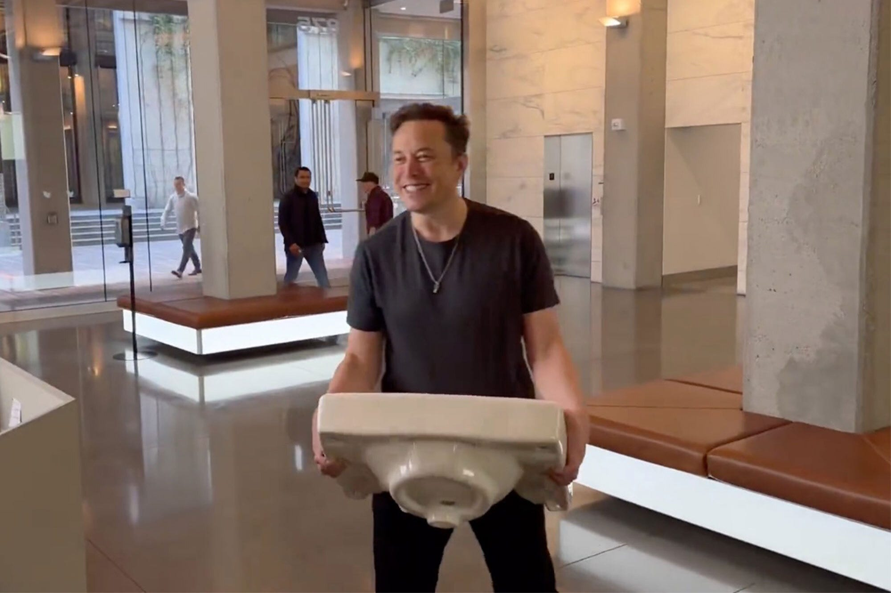
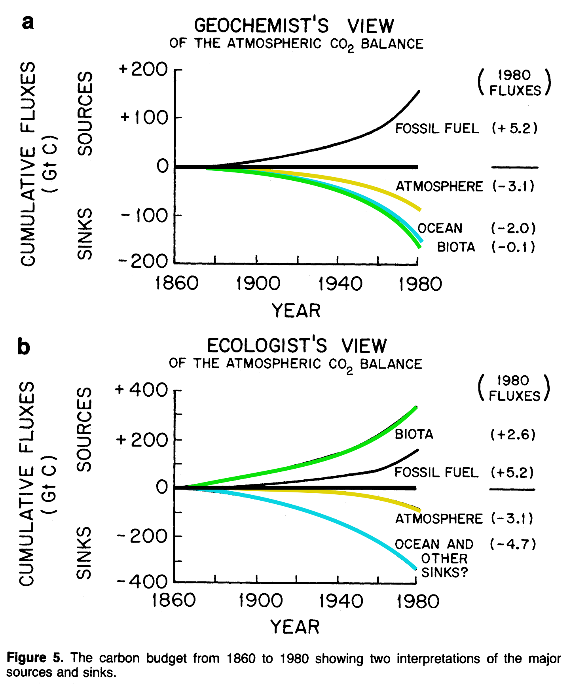
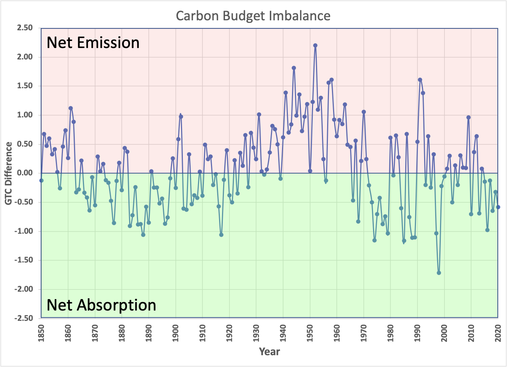
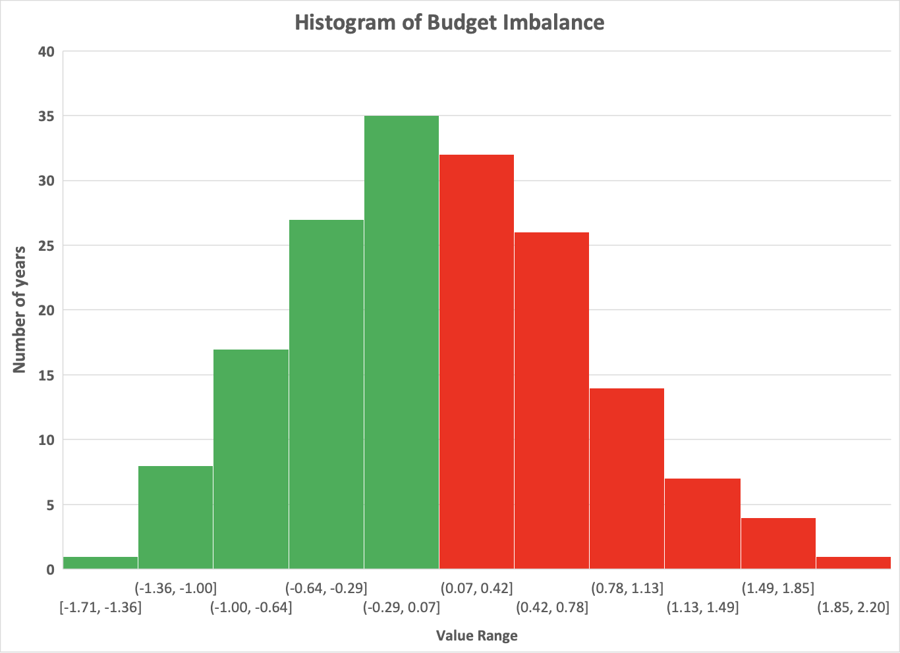
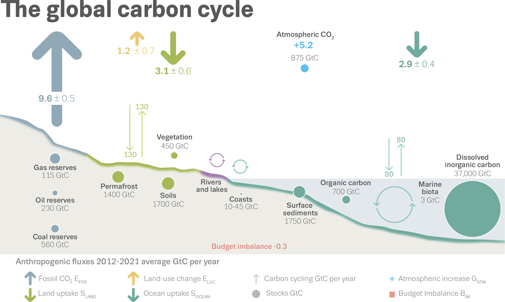
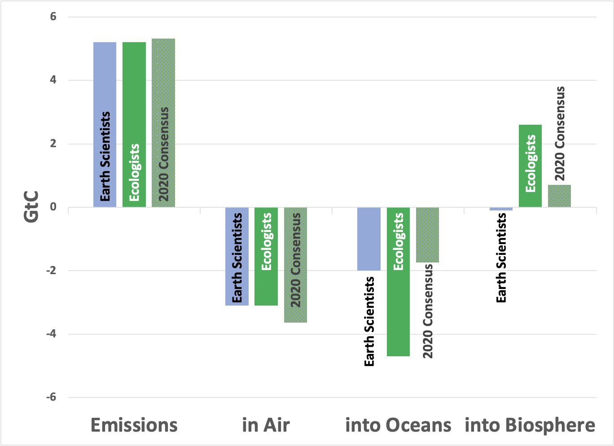

This installment will be long and incomplete, but I think it’s worth trying harder to refine the story, so I will tell it in at least two segments.
I couldn’t resist a contemporary image to go with the title, though:

The origin of this story is as follows: While surfing the net for hard data on the distribution of CO2 between the atmosphere and elsewhere, I stumbled upon “The Missing Sink Controversy”. The controversy, in a nutshell, is that 40 years ago, ecologists and earth scientists (oceanographers and geochemists) disagreed strongly about where the carbon dioxide released from geologic carbon combustion went (in other words, “We agree about the source, but where is the sink?”). To set up the opposing views, here’s a figure from a journal article dated 1984 discussing the Missing Sink, entitled “Role of Biota in Global CO2 Balance: The Controversy”:

I’ve colorized the lines for clarity: In 1984, ecologists claimed that the biosphere is a significant source of CO2, while Earth Scientists contended that it’s a net sink. The two sides agreed that there is more CO2 from the combustion of geologic carbon (5.2 GtC in 1980) than can be accounted for in the atmosphere (3.1 GtC). The difference is substantial, and the “sink” isn’t some minor difference of mere nerdly concern—ecologists appear to have claimed that biota generated one-third of the increase in CO2! But this review was also written before the first IPCC report (1990), so the two fields could have had a legitimate, back-room disagreement between vastly different models.
Before weighing in, let me put three stakes in the ground: First, Earth is a closed system, so the amount of carbon cannot change. It just moves from one reservoir to another. Second, the results compiled above are not measured directly; they’re estimated from contemporary world models. So, they can change; Because the first point is a Law of physical science, any difference must be a numerical error in the model. Finally, any terrestrial absorption model that doesn’t lead to the contribution of “biota” of zero before 1750 is simply wrong. We know that the CO2 level was constant for centuries despite the human appropriation of land for agriculture.
Of course, since 1984, models have gotten increasingly complex, to the point that no single person can grasp the entire landscape. As a result, a complete website and community have formed around developing a “global carbon budget” to check and refine the models, bringing them closer to balance. [As a sense of the increased complexity, the 1984 article had five authors, while the latest carbon budget manuscript1 has a whopping 108.]
So, we can’t critique the models comprehensively. What we can do is to see if the errors in the balance are systematic or random. If they’re systematic, then adding complexity makes sense. If they’re random, it’s just “making the elephant wiggle its trunk” by adding more and more variables, whose errors will only add uncertainty. Here’s what the difference looks like over time:

And here’s what it looks like as a statistical distribution:

It looks as if there are trends over time (probably due to changing models), while the variation looks random (mean +0.076, standard deviation ±0.693). So essentially, the way I read this is that the overall models’ guts are about right. What’s left is to make more accurate measurements, not add complexity, since the error on the composite models is about 700 million tons of C (2.5 billion tons of CO2).
Where does the error come from? We can glean at least a hint from the following figure:

The numbers are impressive, but, to my eye, what’s most notable are the measurement errors, particularly around the land use change and land uptake arrows. The aggregated models say 130 GtC is exchanged due to vegetation, using a mere 450 GtC in vegetation (so over a quarter of all the carbon on land is exchanged). The emission attributed to “land use change” is 1.2 (<1%) ± 0.7 GtC (error >50%) with the uptake of 3.1±0.6 GtC by the same vegetation (re-vegetation?) with an error of 20%. The net difference is that the models predict absorption of 1.9 GtC ± 0.9 GtC from land, consistent with what IPCC currently reports.
How have the models changed since the 1984 paper? Well, since the 2022 paper reports updated 1980 numbers, we can look at the progress directly.
Here’s what’s seen:

Ecological models were way off in 1984, with the most significant model corrections pushing closer to the earth science models. So the “missing sink” debate appears to have been resolved in favor of the Earth Scientists. To be entirely fair, ecology is based on biology, where variability is a confounding characteristic, while earth sciences are based on physics and chemistry, where precision is possible. Still, the enormous variation in biological models makes them nearly useless: It’s not that biology is unimportant. It’s just that the models suck.
To this point, if we look back to 1850, the earliest data point, while geological carbon combustion was beginning to impact the atmosphere, only 0.05GtC was released, yet the land use change models suggest that 0.66 GtC was released, with 0.48 GtC absorbed. Since these numbers should be equal and presumably based on modern models using historical data, I don’t think vegetation models shed any light. There’s lots of room for improvement. Technologies that measure CO2 in 3D from satellites are part of GEDI, a new NASA experiment (yes, Star Wars fans, that’s pronounced Jedi), so perhaps that data will help. More Eddy Flux stations would be an improvement as well.
More next time.
Thank you for reading Healing the Earth with Technology. This post is public, so feel free to share it.
Earth Syst. Sci. Data, 14, 4811–4900, 2022, https://doi.org/10.5194/essd-14-4811-2022